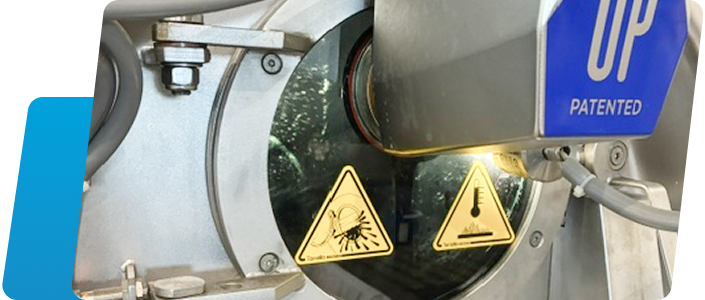

1総務・設備
人事、経理、庶務や入荷・出荷作業、排水処理管理、機械修理など
2企画営業
新商品の開発や工程分析、加工プログラムの作成

3前業務
入荷・洗い加工を行う前の前工程作業（レーザー加工・中古加工など）

4洗い加工
大型洗濯機で様々な加工をして製品へ

5仕上げ
仕上げ作業・付属付け作業・検診作業などや製品の出荷
人事、経理、庶務や入荷・出荷作業、排水処理管理、機械修理など
新商品の開発や工程分析、加工プログラムの作成
入荷・洗い加工を行う前の前工程作業（レーザー加工・中古加工など）

大型洗濯機で様々な加工をして製品へ
仕上げ作業・付属付け作業・検診作業などや製品の出荷